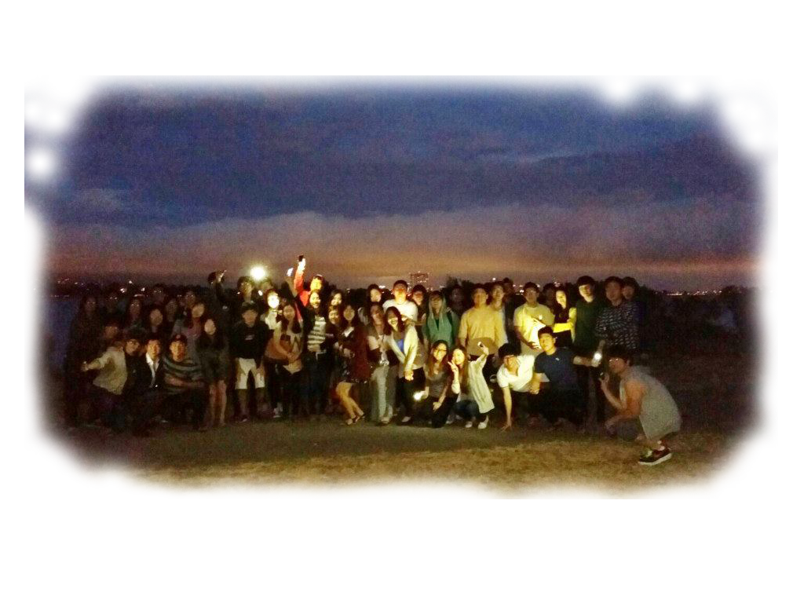

COMMITTEE FOR KOREA STUDIES

Committee for Korea Studies (CKS) was established in 1986, as an attempt to create a modern Korean history course at UC Berkeley. Since its inception, CKS has focused on studying and examining Korean and Korean-American history. CKS has also actively researched various political issues and has engaged in political activities around campus.